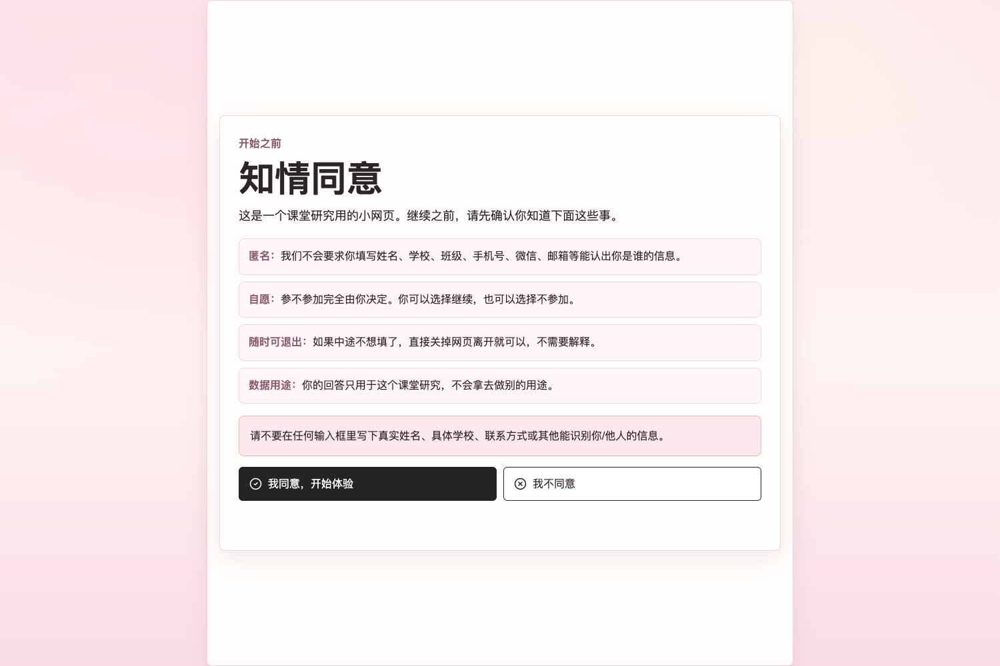

Value-Aligned AI Reflective Diaries for Adolescent Emotional Support
Can an anonymous, safety-constrained AI diary help students feel understood and name one safer next step?
Problem
Many teenagers begin with private worries: school pressure, family conflict, relationship stress, identity confusion, or uncertainty about the future. They may not be ready to talk to a counselor, parent, or teacher.
Research Question
After using a value-aligned anonymous AI reflective diary, do students report higher understanding, less loneliness, more self-acceptance, a safer next step, and more patience toward their concern?
Prototype

The web tool begins with consent, privacy warnings, and a non-clinical safety boundary. Users can also return later to reread saved anonymous diaries in the same browser.
Method
Design: within-subject pre-post prototype evaluation. Users completed the same five-item scale before and after reading the AI diary.
Cutoff: July 11, 2026, 00:00 Asia/Singapore and after. Core complete means pre-survey, post-survey, and an AI diary record were all present.
Measure
The five survey items asked whether the user felt understood, less alone, more accepting of confusion, able to name one safer next step, and willing to give the concern more patience.
Five items were rated 1-5, so total scores ranged from 5 to 25. Higher scores indicate stronger agreement with the support outcomes.
Topics Students Chose
Usage broadened beyond identity questions into everyday emotional pressure.
Results
In the 24 core complete records, total scores moved upward on average.
These results are descriptive and early. They suggest possible short-term support, not clinical effectiveness.
Safety and Ethics
The central design choice was to make AI support helpful without pretending to be therapy.
Meaning
The prototype may lower the first barrier to help-seeking by giving students a private way to name a concern, feel less judged, and identify one manageable next step.
Limitations: small convenience sample, no control group, self-report outcomes, and no evidence of long-term or clinical impact.
Try the Demo
Scan to open the anonymous reflective diary prototype.www.ava-design.net